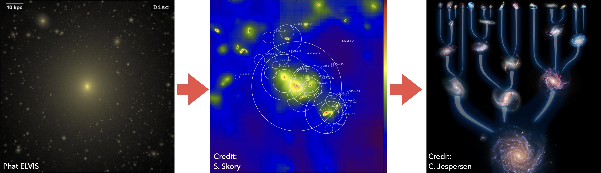

Bloodhound
Bloodhound (Kong, Boylan-Kolchin & Bullock 2025) is a Python package designed to track dark matter substructure in cosmological simulations. It uses a direct particle-tracking approach that overcomes the limitations of conventional halo finder + merger tree pipeline.
What was wrong with traditional tracking tools?
How does Bloodhound work?